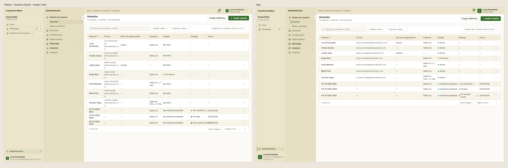
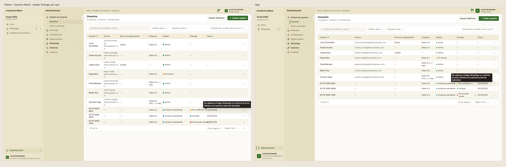
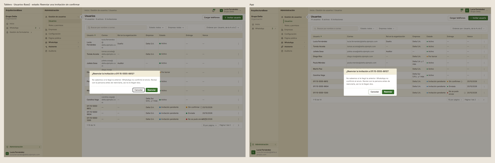
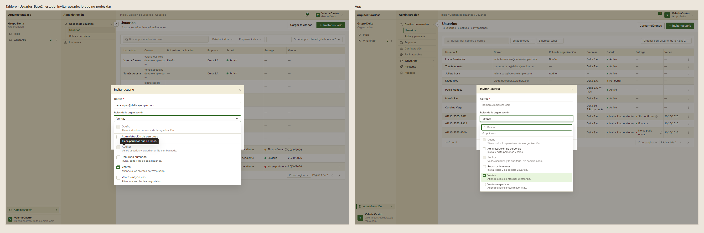
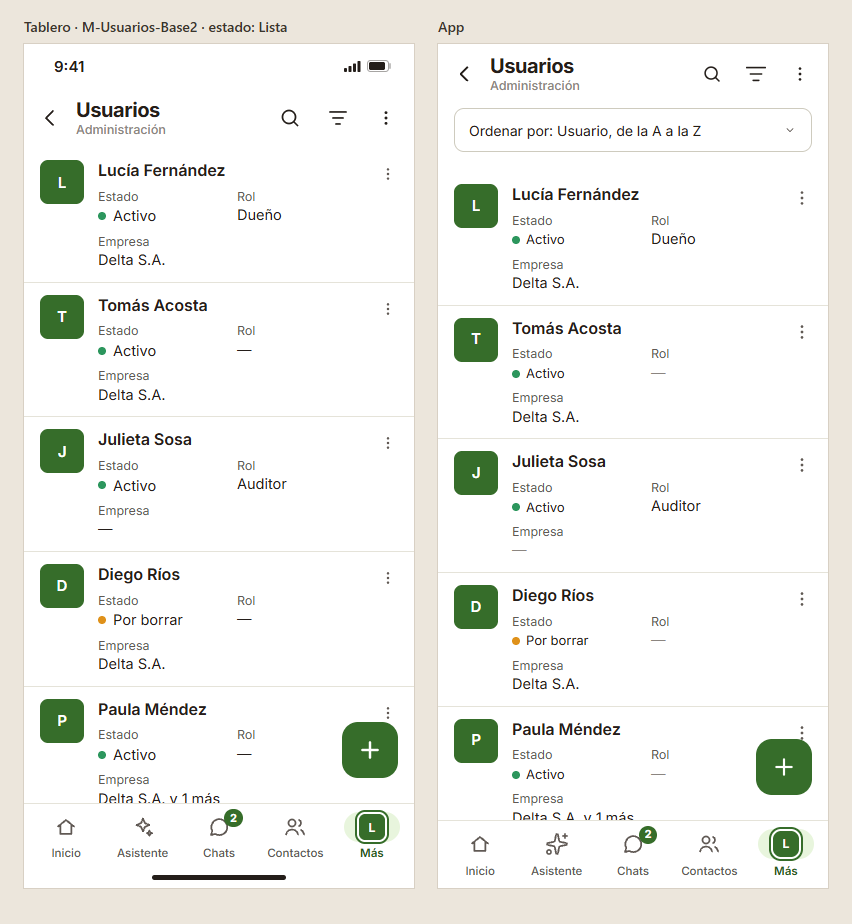
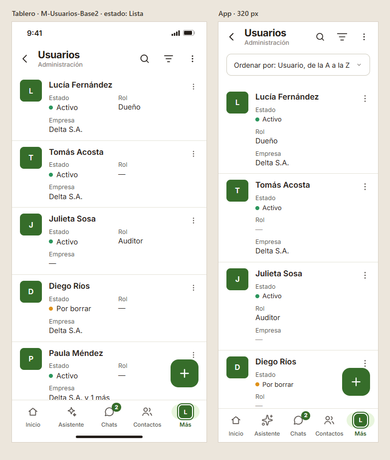
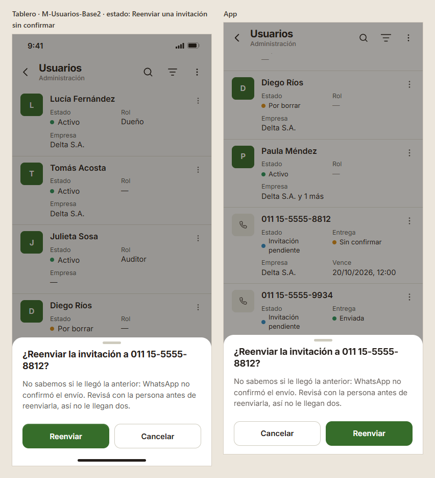
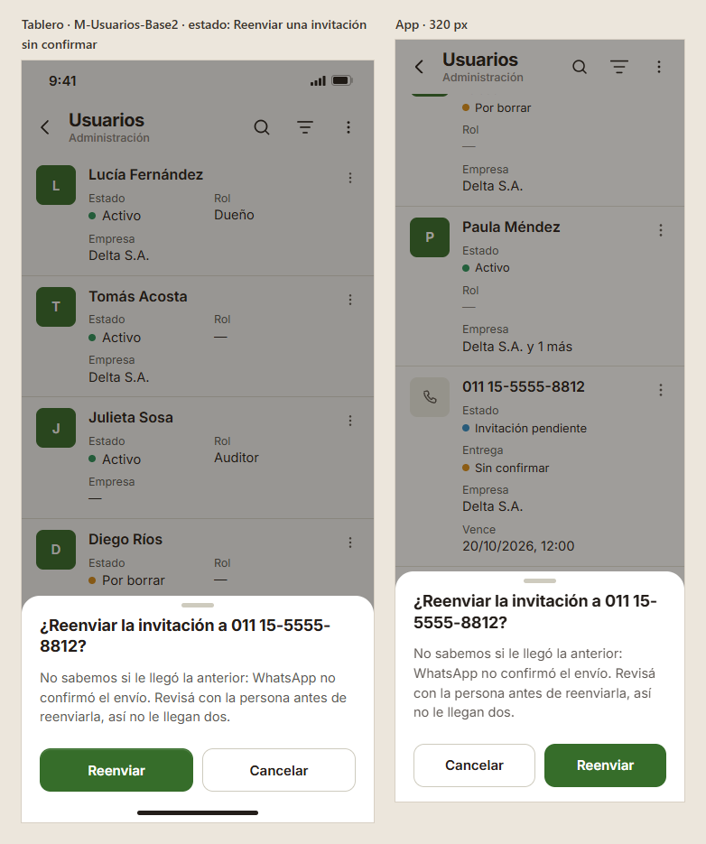
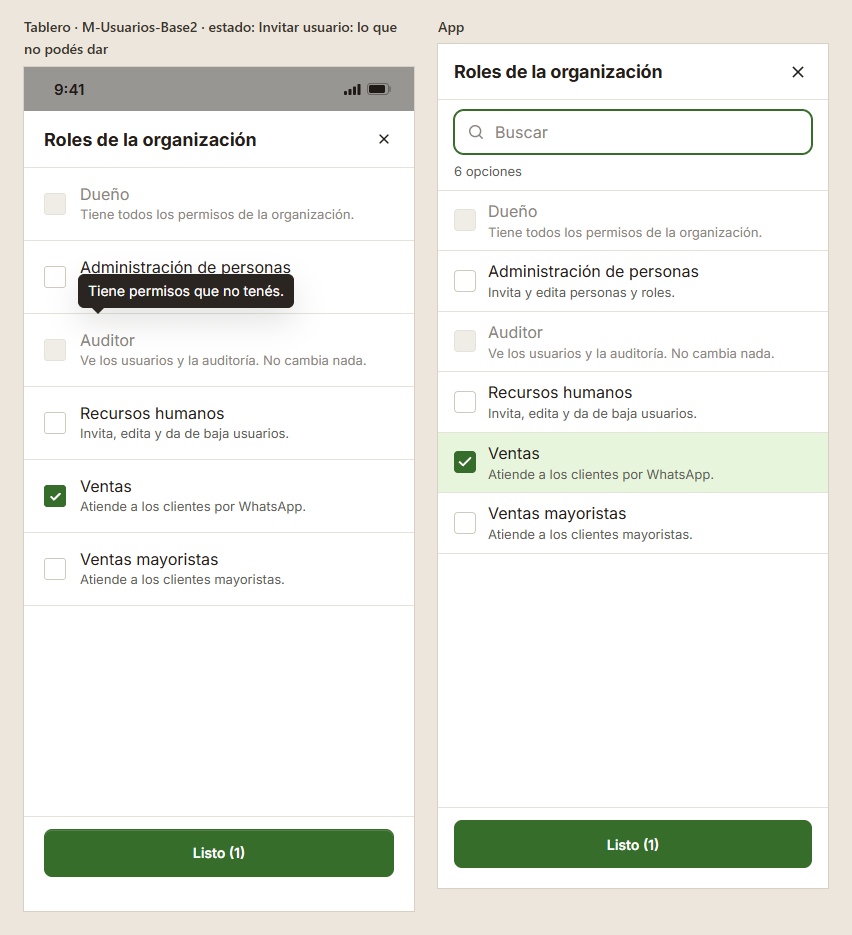
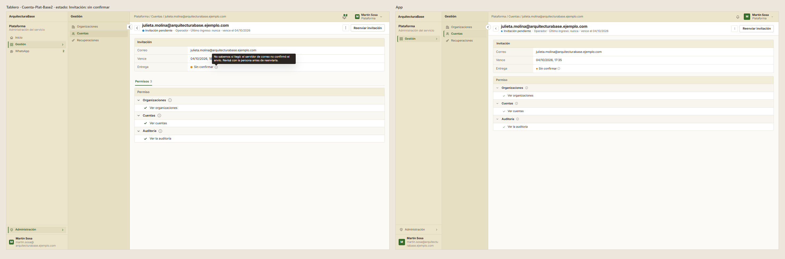

Segunda parte de la base de la 12: API y sesión ficticias para comparar con los tableros -Base2 (v181) y los del asistente (v176); no acredita E2E ni el back.
usuarios-lista · Usuarios-Base2 · Lista

usuarios-entrega-por-que · Usuarios-Base2 · Entrega: por qué

usuarios-reenviar-una-invitacion-sin-confirmar · Usuarios-Base2 · Reenviar una invitación sin confirmar

usuarios-invitar-usuario-lo-que-no-podes-dar · Usuarios-Base2 · Invitar usuario: lo que no podés dar

m-usuarios-lista · M-Usuarios-Base2 · Lista

m-usuarios-lista-320 · M-Usuarios-Base2 · Lista

m-usuarios-reenviar-una-invitacion-sin-confirmar · M-Usuarios-Base2 · Reenviar una invitación sin confirmar

m-usuarios-reenviar-una-invitacion-sin-confirmar-320 · M-Usuarios-Base2 · Reenviar una invitación sin confirmar

m-usuarios-invitar-usuario-lo-que-no-podes-dar · M-Usuarios-Base2 · Invitar usuario: lo que no podés dar

m-usuarios-invitar-usuario-lo-que-no-podes-dar-320 · M-Usuarios-Base2 · Invitar usuario: lo que no podés dar
cuenta-plat-invitacion-sin-confirmar · Cuenta-Plat-Base2 · Invitación: sin confirmar

cuenta-plat-reenviar-una-invitacion-sin-confirmar · Cuenta-Plat-Base2 · Reenviar una invitación sin confirmarcuenta-plat-invitacion-no-se-pudo-enviar · Cuenta-Plat-Base2 · Invitación: no se pudo enviarm-cuenta-plat-operador-sus-permisos · M-Cuenta-Plat-Base2 · Operador: sus permisosm-cuenta-plat-operador-sus-permisos-320 · M-Cuenta-Plat-Base2 · Operador: sus permisosm-cuenta-plat-cambiar-permisos-lo-incluido · M-Cuenta-Plat-Base2 · Cambiar permisos: lo incluidom-cuenta-plat-cambiar-permisos-lo-incluido-320 · M-Cuenta-Plat-Base2 · Cambiar permisos: lo incluidom-cuenta-plat-invitacion-sin-confirmar · M-Cuenta-Plat-Base2 · Invitación: sin confirmarm-cuenta-plat-invitacion-sin-confirmar-320 · M-Cuenta-Plat-Base2 · Invitación: sin confirmarm-cuenta-plat-reenviar-una-invitacion-sin-confirmar · M-Cuenta-Plat-Base2 · Reenviar una invitación sin confirmarm-cuenta-plat-reenviar-una-invitacion-sin-confirmar-320 · M-Cuenta-Plat-Base2 · Reenviar una invitación sin confirmarrol-editar-el-rol-recursos-humanos · Rol-Base2 · Editar el rol Recursos humanosrol-lo-incluido-su-motivo · Rol-Base2 · Lo incluido: su motivorol-lo-incluyen-dos · Rol-Base2 · Lo incluyen dosrol-que-permite-un-area · Rol-Base2 · Qué permite un árearol-crear-un-rol · Rol-Base2 · Crear un rolrol-ver-el-rol-dueno · Rol-Base2 · Ver el rol Dueñorol-ver-el-rol-dueno-un-area-abierta · Rol-Base2 · Ver el rol Dueño: un área abiertarol-lo-que-no-podes-dar · Rol-Base2 · Lo que no podés darrol-lo-que-no-podes-dar-un-area · Rol-Base2 · Lo que no podés dar: un árearol-un-rol-de-una-empresa · Rol-Base2 · Un rol de una empresam-rol-editar-el-rol-recursos-humanos · M-Rol-Base2 · Editar el rol Recursos humanosm-rol-editar-el-rol-recursos-humanos-320 · M-Rol-Base2 · Editar el rol Recursos humanosm-rol-lo-incluido-su-motivo · M-Rol-Base2 · Lo incluido: su motivom-rol-lo-incluido-su-motivo-320 · M-Rol-Base2 · Lo incluido: su motivom-rol-lo-incluyen-dos · M-Rol-Base2 · Lo incluyen dosm-rol-lo-incluyen-dos-320 · M-Rol-Base2 · Lo incluyen dosm-rol-crear-un-rol · M-Rol-Base2 · Crear un rolm-rol-crear-un-rol-320 · M-Rol-Base2 · Crear un rolm-rol-ver-el-rol-dueno · M-Rol-Base2 · Ver el rol Dueñom-rol-ver-el-rol-dueno-320 · M-Rol-Base2 · Ver el rol Dueñom-rol-ver-el-rol-dueno-un-area-abierta · M-Rol-Base2 · Ver el rol Dueño: un área abiertam-rol-ver-el-rol-dueno-un-area-abierta-320 · M-Rol-Base2 · Ver el rol Dueño: un área abiertam-rol-lo-que-no-podes-dar · M-Rol-Base2 · Lo que no podés darm-rol-lo-que-no-podes-dar-320 · M-Rol-Base2 · Lo que no podés darm-rol-un-rol-de-una-empresa · M-Rol-Base2 · Un rol de una empresam-rol-un-rol-de-una-empresa-320 · M-Rol-Base2 · Un rol de una empresaconfig-plat-sin-cambios · Config-Plat-Base2 · Sin cambiosconfig-plat-la-i-de-privacidad-y-retencion · Config-Plat-Base2 · La (i) de Privacidad y retenciónconfig-plat-paises-la-lista · Config-Plat-Base2 · Países: la listaconfig-plat-sumar-un-pais-el-aviso-de-costo · Config-Plat-Base2 · Sumar un país: el aviso de costoconfig-plat-con-el-nombre-nuevo · Config-Plat-Base2 · Con el nombre nuevoconfig-plat-un-plazo-fuera-de-rango · Config-Plat-Base2 · Un plazo fuera de rangoconfig-plat-sin-paises · Config-Plat-Base2 · Sin paísesconfig-plat-otra-persona-cambio-la-configuracion · Config-Plat-Base2 · Otra persona cambió la configuraciónconfig-plat-sin-permiso · Config-Plat-Base2 · Sin permisom-config-plat-sin-cambios · M-Config-Plat-Base2 · Sin cambiosm-config-plat-sin-cambios-320 · M-Config-Plat-Base2 · Sin cambiosm-config-plat-la-i-de-privacidad-y-retencion · M-Config-Plat-Base2 · La (i) de Privacidad y retenciónm-config-plat-la-i-de-privacidad-y-retencion-320 · M-Config-Plat-Base2 · La (i) de Privacidad y retenciónm-config-plat-paises-la-lista · M-Config-Plat-Base2 · Países: la listam-config-plat-paises-la-lista-320 · M-Config-Plat-Base2 · Países: la listam-config-plat-sumar-un-pais-el-aviso-de-costo · M-Config-Plat-Base2 · Sumar un país: el aviso de costom-config-plat-sumar-un-pais-el-aviso-de-costo-320 · M-Config-Plat-Base2 · Sumar un país: el aviso de costoconfiguracion-la-zona-horaria-cerrada · Configuracion-Base2 · La zona horaria, cerradaconfiguracion-la-zona-horaria-abierta · Configuracion-Base2 · La zona horaria, abiertaconfiguracion-buscar-una-zona · Configuracion-Base2 · Buscar una zonaconfiguracion-el-idioma-abierto · Configuracion-Base2 · El idioma, abiertom-configuracion-la-zona-horaria-cerrada · M-Configuracion-Base2 · La zona horaria, cerradam-configuracion-la-zona-horaria-cerrada-320 · M-Configuracion-Base2 · La zona horaria, cerradam-configuracion-la-zona-horaria-abierta · M-Configuracion-Base2 · La zona horaria, abiertam-configuracion-la-zona-horaria-abierta-320 · M-Configuracion-Base2 · La zona horaria, abiertacuenta-la-zona-horaria-cerrada · Cuenta-Base2 · La zona horaria, cerradacuenta-la-zona-horaria-abierta · Cuenta-Base2 · La zona horaria, abiertacuenta-buscar-una-zona · Cuenta-Base2 · Buscar una zonacuenta-el-idioma-abierto · Cuenta-Base2 · El idioma, abiertom-cuenta-la-zona-horaria-cerrada · M-Cuenta-Base2 · La zona horaria, cerradam-cuenta-la-zona-horaria-cerrada-320 · M-Cuenta-Base2 · La zona horaria, cerradam-cuenta-la-zona-horaria-abierta · M-Cuenta-Base2 · La zona horaria, abiertam-cuenta-la-zona-horaria-abierta-320 · M-Cuenta-Base2 · La zona horaria, abiertaplat-wa-chats-sin-confirmar · Plat-WA-Chats-Base2 · Sin confirmarplat-wa-chats-sin-confirmar-por-que · Plat-WA-Chats-Base2 · Sin confirmar: por quéplat-wa-chats-revisado · Plat-WA-Chats-Base2 · Revisadoplat-wa-chats-no-se-pudo-mandar-notallowed · Plat-WA-Chats-Base2 · No se pudo mandar: NotAllowedplat-wa-chats-no-se-pudo-mandar-windowclosed · Plat-WA-Chats-Base2 · No se pudo mandar: WindowClosedplat-wa-chats-no-se-pudo-mandar-undeliverable · Plat-WA-Chats-Base2 · No se pudo mandar: Undeliverableplat-wa-chats-no-se-pudo-mandar-ratelimited · Plat-WA-Chats-Base2 · No se pudo mandar: RateLimitedplat-wa-chats-no-se-pudo-mandar-tokeninvalid · Plat-WA-Chats-Base2 · No se pudo mandar: TokenInvalidplat-wa-chats-no-se-pudo-mandar-permissionmissing · Plat-WA-Chats-Base2 · No se pudo mandar: PermissionMissingplat-wa-chats-no-se-pudo-mandar-unavailable · Plat-WA-Chats-Base2 · No se pudo mandar: Unavailableplat-wa-chats-no-se-pudo-mandar-rejected · Plat-WA-Chats-Base2 · No se pudo mandar: Rejectedwa-chats-sin-confirmar · WA-Chats-Base2 · Sin confirmarwa-chats-sin-confirmar-por-que · WA-Chats-Base2 · Sin confirmar: por quéwa-chats-revisado · WA-Chats-Base2 · Revisadowa-chats-no-se-pudo-mandar-notallowed · WA-Chats-Base2 · No se pudo mandar: NotAllowedwa-chats-no-se-pudo-mandar-windowclosed · WA-Chats-Base2 · No se pudo mandar: WindowClosedwa-chats-no-se-pudo-mandar-undeliverable · WA-Chats-Base2 · No se pudo mandar: Undeliverablewa-chats-no-se-pudo-mandar-ratelimited · WA-Chats-Base2 · No se pudo mandar: RateLimitedwa-chats-no-se-pudo-mandar-tokeninvalid · WA-Chats-Base2 · No se pudo mandar: TokenInvalidwa-chats-no-se-pudo-mandar-permissionmissing · WA-Chats-Base2 · No se pudo mandar: PermissionMissingwa-chats-no-se-pudo-mandar-unavailable · WA-Chats-Base2 · No se pudo mandar: Unavailablewa-chats-no-se-pudo-mandar-rejected · WA-Chats-Base2 · No se pudo mandar: Rejectedm-wa-conversacion-sin-confirmar · M-WA-Conversacion-Base2 · Sin confirmarm-wa-conversacion-sin-confirmar-320 · M-WA-Conversacion-Base2 · Sin confirmarm-wa-conversacion-sin-confirmar-por-que · M-WA-Conversacion-Base2 · Sin confirmar: por quém-wa-conversacion-sin-confirmar-por-que-320 · M-WA-Conversacion-Base2 · Sin confirmar: por quém-wa-conversacion-revisado · M-WA-Conversacion-Base2 · Revisadom-wa-conversacion-revisado-320 · M-WA-Conversacion-Base2 · Revisadom-wa-conversacion-no-se-pudo-mandar-notallowed · M-WA-Conversacion-Base2 · No se pudo mandar: NotAllowedm-wa-conversacion-no-se-pudo-mandar-notallowed-320 · M-WA-Conversacion-Base2 · No se pudo mandar: NotAllowedm-wa-conversacion-no-se-pudo-mandar-windowclosed · M-WA-Conversacion-Base2 · No se pudo mandar: WindowClosedm-wa-conversacion-no-se-pudo-mandar-windowclosed-320 · M-WA-Conversacion-Base2 · No se pudo mandar: WindowClosedm-wa-conversacion-no-se-pudo-mandar-undeliverable · M-WA-Conversacion-Base2 · No se pudo mandar: Undeliverablem-wa-conversacion-no-se-pudo-mandar-undeliverable-320 · M-WA-Conversacion-Base2 · No se pudo mandar: Undeliverablem-wa-conversacion-no-se-pudo-mandar-ratelimited · M-WA-Conversacion-Base2 · No se pudo mandar: RateLimitedm-wa-conversacion-no-se-pudo-mandar-ratelimited-320 · M-WA-Conversacion-Base2 · No se pudo mandar: RateLimitedm-wa-conversacion-no-se-pudo-mandar-tokeninvalid · M-WA-Conversacion-Base2 · No se pudo mandar: TokenInvalidm-wa-conversacion-no-se-pudo-mandar-tokeninvalid-320 · M-WA-Conversacion-Base2 · No se pudo mandar: TokenInvalidm-wa-conversacion-no-se-pudo-mandar-permissionmissing · M-WA-Conversacion-Base2 · No se pudo mandar: PermissionMissingm-wa-conversacion-no-se-pudo-mandar-permissionmissing-320 · M-WA-Conversacion-Base2 · No se pudo mandar: PermissionMissingm-wa-conversacion-no-se-pudo-mandar-unavailable · M-WA-Conversacion-Base2 · No se pudo mandar: Unavailablem-wa-conversacion-no-se-pudo-mandar-unavailable-320 · M-WA-Conversacion-Base2 · No se pudo mandar: Unavailablem-wa-conversacion-no-se-pudo-mandar-rejected · M-WA-Conversacion-Base2 · No se pudo mandar: Rejectedm-wa-conversacion-no-se-pudo-mandar-rejected-320 · M-WA-Conversacion-Base2 · No se pudo mandar: Rejectedm-plat-wa-conversacion-sin-confirmar · M-Plat-WA-Conversacion-Base2 · Sin confirmarm-plat-wa-conversacion-sin-confirmar-320 · M-Plat-WA-Conversacion-Base2 · Sin confirmarm-plat-wa-conversacion-sin-confirmar-por-que · M-Plat-WA-Conversacion-Base2 · Sin confirmar: por quém-plat-wa-conversacion-sin-confirmar-por-que-320 · M-Plat-WA-Conversacion-Base2 · Sin confirmar: por quém-plat-wa-conversacion-revisado · M-Plat-WA-Conversacion-Base2 · Revisadom-plat-wa-conversacion-revisado-320 · M-Plat-WA-Conversacion-Base2 · Revisadom-plat-wa-conversacion-no-se-pudo-mandar-notallowed · M-Plat-WA-Conversacion-Base2 · No se pudo mandar: NotAllowedm-plat-wa-conversacion-no-se-pudo-mandar-notallowed-320 · M-Plat-WA-Conversacion-Base2 · No se pudo mandar: NotAllowedm-plat-wa-conversacion-no-se-pudo-mandar-windowclosed · M-Plat-WA-Conversacion-Base2 · No se pudo mandar: WindowClosedm-plat-wa-conversacion-no-se-pudo-mandar-windowclosed-320 · M-Plat-WA-Conversacion-Base2 · No se pudo mandar: WindowClosedm-plat-wa-conversacion-no-se-pudo-mandar-undeliverable · M-Plat-WA-Conversacion-Base2 · No se pudo mandar: Undeliverablem-plat-wa-conversacion-no-se-pudo-mandar-undeliverable-320 · M-Plat-WA-Conversacion-Base2 · No se pudo mandar: Undeliverablem-plat-wa-conversacion-no-se-pudo-mandar-ratelimited · M-Plat-WA-Conversacion-Base2 · No se pudo mandar: RateLimitedm-plat-wa-conversacion-no-se-pudo-mandar-ratelimited-320 · M-Plat-WA-Conversacion-Base2 · No se pudo mandar: RateLimitedm-plat-wa-conversacion-no-se-pudo-mandar-tokeninvalid · M-Plat-WA-Conversacion-Base2 · No se pudo mandar: TokenInvalidm-plat-wa-conversacion-no-se-pudo-mandar-tokeninvalid-320 · M-Plat-WA-Conversacion-Base2 · No se pudo mandar: TokenInvalidm-plat-wa-conversacion-no-se-pudo-mandar-permissionmissing · M-Plat-WA-Conversacion-Base2 · No se pudo mandar: PermissionMissingm-plat-wa-conversacion-no-se-pudo-mandar-permissionmissing-320 · M-Plat-WA-Conversacion-Base2 · No se pudo mandar: PermissionMissingm-plat-wa-conversacion-no-se-pudo-mandar-unavailable · M-Plat-WA-Conversacion-Base2 · No se pudo mandar: Unavailablem-plat-wa-conversacion-no-se-pudo-mandar-unavailable-320 · M-Plat-WA-Conversacion-Base2 · No se pudo mandar: Unavailablem-plat-wa-conversacion-no-se-pudo-mandar-rejected · M-Plat-WA-Conversacion-Base2 · No se pudo mandar: Rejectedm-plat-wa-conversacion-no-se-pudo-mandar-rejected-320 · M-Plat-WA-Conversacion-Base2 · No se pudo mandar: Rejectedwa-difusion-resultados-resultados · WA-Difusion-Resultados-Base2 · Resultadoswa-difusion-resultados-sin-confirmar-por-que · WA-Difusion-Resultados-Base2 · Sin confirmar: por quém-wa-difusion-resultados-tablero · M-WA-Difusion-Resultados-Base2 · Tablerom-wa-difusion-resultados-tablero-320 · M-WA-Difusion-Resultados-Base2 · Tablerowa-difusiones-tablero · WA-Difusiones-Base2 · Tablerowa-config-sin-cambios · WA-Config-Base2 · Sin cambioswa-config-la-i-del-plazo · WA-Config-Base2 · La (i) del plazowa-config-fuera-de-rango · WA-Config-Base2 · Fuera de rangowa-config-mas-que-el-maximo-de-la-plataforma · WA-Config-Base2 · Más que el máximo de la plataformawa-config-otra-persona-cambio-la-configuracion · WA-Config-Base2 · Otra persona cambió la configuraciónwa-config-solo-lectura · WA-Config-Base2 · Solo lecturam-wa-config-sin-cambios · M-WA-Config-Base2 · Sin cambiosm-wa-config-sin-cambios-320 · M-WA-Config-Base2 · Sin cambiosm-wa-config-la-i-del-plazo · M-WA-Config-Base2 · La (i) del plazom-wa-config-la-i-del-plazo-320 · M-WA-Config-Base2 · La (i) del plazom-wa-config-fuera-de-rango · M-WA-Config-Base2 · Fuera de rangom-wa-config-fuera-de-rango-320 · M-WA-Config-Base2 · Fuera de rangowa-respuestas-fuera-de-horario · WA-Respuestas-Base2 · Fuera de horariowa-respuestas-zona-horaria-la-lista · WA-Respuestas-Base2 · Zona horaria: la listawa-respuestas-editar-un-dia · WA-Respuestas-Base2 · Editar un díawa-respuestas-un-dia-cerrado · WA-Respuestas-Base2 · Un día cerradom-wa-respuestas-fuera-de-horario · M-WA-Respuestas-Base2 · Fuera de horariom-wa-respuestas-fuera-de-horario-320 · M-WA-Respuestas-Base2 · Fuera de horariom-wa-respuestas-zona-horaria-la-lista · M-WA-Respuestas-Base2 · Zona horaria: la listam-wa-respuestas-zona-horaria-la-lista-320 · M-WA-Respuestas-Base2 · Zona horaria: la listam-wa-respuestas-la-atencion-de-un-dia · M-WA-Respuestas-Base2 · La atención de un díam-wa-respuestas-la-atencion-de-un-dia-320 · M-WA-Respuestas-Base2 · La atención de un díaasistente-org-tope-del-dia · Asistente-Org-Base2 · Tope del díaasistente-org-tope-del-dia-cada-organizacion-tiene-su-cupo · Asistente-Org-Base2 · Tope del día: cada organización tiene su cupom-asistente-org-tope-del-dia · M-Asistente-Org-Base2 · Tope del díam-asistente-org-tope-del-dia-320 · M-Asistente-Org-Base2 · Tope del díam-asistente-org-tope-del-dia-cada-organizacion-tiene-su-cupo · M-Asistente-Org-Base2 · Tope del día: cada organización tiene su cupom-asistente-org-tope-del-dia-cada-organizacion-tiene-su-cupo-320 · M-Asistente-Org-Base2 · Tope del día: cada organización tiene su cupoasistente-personal-tope-del-dia · Asistente-Personal-Base2 · Tope del díam-asistente-personal-tope-del-dia · M-Asistente-Personal-Base2 · Tope del díam-asistente-personal-tope-del-dia-320 · M-Asistente-Personal-Base2 · Tope del díaasistente-plat-tope-del-dia · Asistente-Plat-Base2 · Tope del díam-asistente-plat-tope-del-dia · M-Asistente-Plat-Base2 · Tope del díam-asistente-plat-tope-del-dia-320 · M-Asistente-Plat-Base2 · Tope del díaasistente-config-org-con-la-clave-de-la-plataforma · Asistente-Config-Org · Con la clave de la plataformaasistente-config-org-con-su-clave · Asistente-Config-Org · Con su claveasistente-config-org-la-nuestra-ningun-dueno-con-correo-verificado · Asistente-Config-Org · La nuestra: ningún Dueño con correo verificadoasistente-config-org-la-plataforma-no-habilito-su-clave · Asistente-Config-Org · La plataforma no habilitó su claveasistente-config-org-elegir-el-modelo · Asistente-Config-Org · Elegir el modeloasistente-config-org-con-cambios · Asistente-Config-Org · Con cambiosasistente-config-org-cambiar-la-clave · Asistente-Config-Org · Cambiar la claveasistente-config-org-clave-rechazada · Asistente-Config-Org · Clave rechazadaasistente-config-org-su-clave-rechazada · Asistente-Config-Org · Su clave: rechazadaasistente-config-org-su-clave-cupo-del-proveedor · Asistente-Config-Org · Su clave: cupo del proveedorasistente-config-org-su-clave-modelo-no-aceptado · Asistente-Config-Org · Su clave: modelo no aceptadoasistente-config-org-su-clave-no-se-pudo-conectar · Asistente-Config-Org · Su clave: no se pudo conectarasistente-config-org-su-clave-no-se-puede-leer · Asistente-Config-Org · Su clave: no se puede leerasistente-config-org-su-clave-proveedor-desconocido · Asistente-Config-Org · Su clave: proveedor desconocidoasistente-config-org-la-de-la-plataforma-no-disponible · Asistente-Config-Org · La de la plataforma: no disponiblem-asistente-config-org-con-la-clave-de-la-plataforma · M-Asistente-Config-Org · Con la clave de la plataformam-asistente-config-org-con-la-clave-de-la-plataforma-320 · M-Asistente-Config-Org · Con la clave de la plataformam-asistente-config-org-con-su-clave · M-Asistente-Config-Org · Con su clavem-asistente-config-org-con-su-clave-320 · M-Asistente-Config-Org · Con su clavem-asistente-config-org-la-nuestra-ningun-dueno-con-correo-verificado · M-Asistente-Config-Org · La nuestra: ningún Dueño con correo verificadom-asistente-config-org-la-nuestra-ningun-dueno-con-correo-verificado-320 · M-Asistente-Config-Org · La nuestra: ningún Dueño con correo verificadom-asistente-config-org-la-plataforma-no-habilito-su-clave · M-Asistente-Config-Org · La plataforma no habilitó su clavem-asistente-config-org-la-plataforma-no-habilito-su-clave-320 · M-Asistente-Config-Org · La plataforma no habilitó su clavem-asistente-config-org-su-clave-rechazada · M-Asistente-Config-Org · Su clave: rechazadam-asistente-config-org-su-clave-rechazada-320 · M-Asistente-Config-Org · Su clave: rechazadam-asistente-config-org-su-clave-cupo-del-proveedor · M-Asistente-Config-Org · Su clave: cupo del proveedorm-asistente-config-org-su-clave-cupo-del-proveedor-320 · M-Asistente-Config-Org · Su clave: cupo del proveedorm-asistente-config-org-su-clave-modelo-no-aceptado · M-Asistente-Config-Org · Su clave: modelo no aceptadom-asistente-config-org-su-clave-modelo-no-aceptado-320 · M-Asistente-Config-Org · Su clave: modelo no aceptadom-asistente-config-org-su-clave-no-se-pudo-conectar · M-Asistente-Config-Org · Su clave: no se pudo conectarm-asistente-config-org-su-clave-no-se-pudo-conectar-320 · M-Asistente-Config-Org · Su clave: no se pudo conectarm-asistente-config-org-su-clave-no-se-puede-leer · M-Asistente-Config-Org · Su clave: no se puede leerm-asistente-config-org-su-clave-no-se-puede-leer-320 · M-Asistente-Config-Org · Su clave: no se puede leerm-asistente-config-org-su-clave-proveedor-desconocido · M-Asistente-Config-Org · Su clave: proveedor desconocidom-asistente-config-org-su-clave-proveedor-desconocido-320 · M-Asistente-Config-Org · Su clave: proveedor desconocidom-asistente-config-org-la-de-la-plataforma-no-disponible · M-Asistente-Config-Org · La de la plataforma: no disponiblem-asistente-config-org-la-de-la-plataforma-no-disponible-320 · M-Asistente-Config-Org · La de la plataforma: no disponibleplat-asistente-config-configurada · Plat-Asistente-Config · Configuradaplat-asistente-config-sin-clave · Plat-Asistente-Config · Sin claveplat-asistente-config-catalogo-de-modelos · Plat-Asistente-Config · Catálogo de modelosplat-asistente-config-agregar-un-modelo · Plat-Asistente-Config · Agregar un modeloplat-asistente-config-editar-un-modelo · Plat-Asistente-Config · Editar un modeloplat-asistente-config-editar-un-modelo-error-en-un-dato-tecnico · Plat-Asistente-Config · Editar un modelo: error en un dato técnicoplat-asistente-config-elegir-los-modelos-permitidos · Plat-Asistente-Config · Elegir los modelos permitidosplat-asistente-config-con-cambios · Plat-Asistente-Config · Con cambiosplat-asistente-config-clave-rechazada · Plat-Asistente-Config · Clave rechazadaplat-asistente-config-falla-clave-rechazada · Plat-Asistente-Config · Falla: clave rechazadaplat-asistente-config-falla-cupo-del-proveedor · Plat-Asistente-Config · Falla: cupo del proveedorplat-asistente-config-falla-modelo-no-aceptado · Plat-Asistente-Config · Falla: modelo no aceptadoplat-asistente-config-falla-no-se-pudo-conectar · Plat-Asistente-Config · Falla: no se pudo conectarplat-asistente-config-falla-la-clave-no-se-puede-leer · Plat-Asistente-Config · Falla: la clave no se puede leerplat-asistente-config-falla-proveedor-desconocido · Plat-Asistente-Config · Falla: proveedor desconocidoplat-asistente-config-agregar-un-modelo-datos-tecnicos · Plat-Asistente-Config · Agregar un modelo: datos técnicosplat-asistente-config-editar-un-modelo-datos-tecnicos · Plat-Asistente-Config · Editar un modelo: datos técnicosm-plat-asistente-config-configurada · M-Plat-Asistente-Config · Configuradam-plat-asistente-config-configurada-320 · M-Plat-Asistente-Config · Configuradam-plat-asistente-config-sin-clave · M-Plat-Asistente-Config · Sin clavem-plat-asistente-config-sin-clave-320 · M-Plat-Asistente-Config · Sin clavem-plat-asistente-config-catalogo-de-modelos · M-Plat-Asistente-Config · Catálogo de modelosm-plat-asistente-config-catalogo-de-modelos-320 · M-Plat-Asistente-Config · Catálogo de modelosm-plat-asistente-config-agregar-un-modelo · M-Plat-Asistente-Config · Agregar un modelom-plat-asistente-config-agregar-un-modelo-320 · M-Plat-Asistente-Config · Agregar un modelom-plat-asistente-config-editar-un-modelo · M-Plat-Asistente-Config · Editar un modelom-plat-asistente-config-editar-un-modelo-320 · M-Plat-Asistente-Config · Editar un modelom-plat-asistente-config-editar-un-modelo-error-en-un-dato-tecnico · M-Plat-Asistente-Config · Editar un modelo: error en un dato técnicom-plat-asistente-config-editar-un-modelo-error-en-un-dato-tecnico-320 · M-Plat-Asistente-Config · Editar un modelo: error en un dato técnicom-plat-asistente-config-falla-clave-rechazada · M-Plat-Asistente-Config · Falla: clave rechazadam-plat-asistente-config-falla-clave-rechazada-320 · M-Plat-Asistente-Config · Falla: clave rechazadam-plat-asistente-config-falla-cupo-del-proveedor · M-Plat-Asistente-Config · Falla: cupo del proveedorm-plat-asistente-config-falla-cupo-del-proveedor-320 · M-Plat-Asistente-Config · Falla: cupo del proveedorm-plat-asistente-config-falla-modelo-no-aceptado · M-Plat-Asistente-Config · Falla: modelo no aceptadom-plat-asistente-config-falla-modelo-no-aceptado-320 · M-Plat-Asistente-Config · Falla: modelo no aceptadom-plat-asistente-config-falla-no-se-pudo-conectar · M-Plat-Asistente-Config · Falla: no se pudo conectarm-plat-asistente-config-falla-no-se-pudo-conectar-320 · M-Plat-Asistente-Config · Falla: no se pudo conectarm-plat-asistente-config-falla-la-clave-no-se-puede-leer · M-Plat-Asistente-Config · Falla: la clave no se puede leerm-plat-asistente-config-falla-la-clave-no-se-puede-leer-320 · M-Plat-Asistente-Config · Falla: la clave no se puede leerm-plat-asistente-config-falla-proveedor-desconocido · M-Plat-Asistente-Config · Falla: proveedor desconocidom-plat-asistente-config-falla-proveedor-desconocido-320 · M-Plat-Asistente-Config · Falla: proveedor desconocidom-plat-asistente-config-editar-un-modelo-datos-tecnicos · M-Plat-Asistente-Config · Editar un modelo: datos técnicosm-plat-asistente-config-editar-un-modelo-datos-tecnicos-320 · M-Plat-Asistente-Config · Editar un modelo: datos técnicosasistente-uso-org-por-dia · Asistente-Uso-Org · Por díaasistente-uso-org-por-persona · Asistente-Uso-Org · Por personaasistente-uso-org-cerca-del-tope · Asistente-Uso-Org · Cerca del topeasistente-uso-org-llego-al-tope · Asistente-Uso-Org · Llegó al topeasistente-uso-org-sin-uso-este-mes · Asistente-Uso-Org · Sin uso este mesm-asistente-uso-org-por-dia · M-Asistente-Uso-Org · Por díam-asistente-uso-org-por-dia-320 · M-Asistente-Uso-Org · Por díam-asistente-uso-org-por-persona · M-Asistente-Uso-Org · Por personam-asistente-uso-org-por-persona-320 · M-Asistente-Uso-Org · Por personam-asistente-uso-org-cerca-del-tope · M-Asistente-Uso-Org · Cerca del topem-asistente-uso-org-cerca-del-tope-320 · M-Asistente-Uso-Org · Cerca del topeauditoria-plat-tablero · Auditoria-Plat-Base2 · Tablerom-auditoria-plat-tablero · M-Auditoria-Plat-Base2 · Tablerom-auditoria-plat-tablero-320 · M-Auditoria-Plat-Base2 · Tablerolegales-tablero · Legales-Base2 · Tablerocriterio-tablas-tablero · Criterio-Tablas-Base2 · Tablerom-filas-roles · M-Filas-Base2 · Rolesm-filas-roles-320 · M-Filas-Base2 · Rolesm-filas-empresas · M-Filas-Base2 · Empresasm-filas-empresas-320 · M-Filas-Base2 · Empresasm-filas-organizaciones · M-Filas-Base2 · Organizacionesm-filas-organizaciones-320 · M-Filas-Base2 · Organizacionesm-filas-recuperaciones · M-Filas-Base2 · Recuperacionesm-filas-recuperaciones-320 · M-Filas-Base2 · Recuperacionesm-filas-auditoria-de-plataforma · M-Filas-Base2 · Auditoría de Plataformam-filas-auditoria-de-plataforma-320 · M-Filas-Base2 · Auditoría de Plataformam-filas-contactos · M-Filas-Base2 · Contactosm-filas-contactos-320 · M-Filas-Base2 · Contactosm-filas-difusiones · M-Filas-Base2 · Difusionesm-filas-difusiones-320 · M-Filas-Base2 · Difusionesm-filas-equipos · M-Filas-Base2 · Equiposm-filas-equipos-320 · M-Filas-Base2 · Equiposm-filas-plantillas · M-Filas-Base2 · Plantillasm-filas-plantillas-320 · M-Filas-Base2 · Plantillasm-filas-documentos-legales · M-Filas-Base2 · Documentos legalesm-filas-documentos-legales-320 · M-Filas-Base2 · Documentos legalesm-filas-numeros-de-whatsapp · M-Filas-Base2 · Números de WhatsAppm-filas-numeros-de-whatsapp-320 · M-Filas-Base2 · Números de WhatsApp